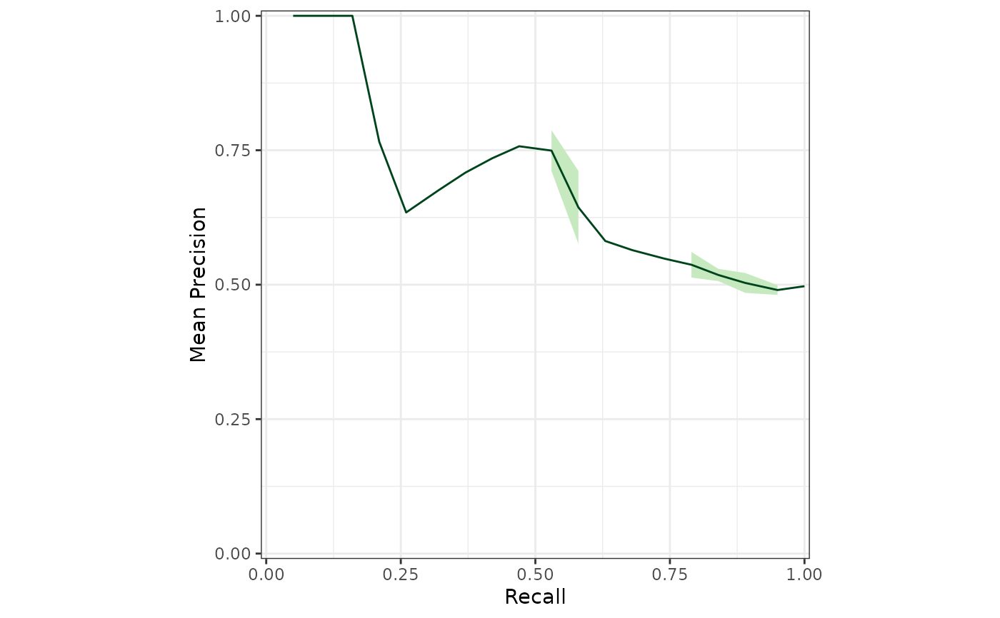

Calculate balanced precision given actual and baseline precision
Source:R/performance.R
calc_balanced_precision.RdImplements Equation 1 from Wu et al. 2021 doi:10.1016/j.ajhg.2021.08.012
.
It is the same as Equation 7 if AUPRC (aka prAUC) is used in place of precision.
Arguments
- precision
actual precision of the model.
- prior
baseline precision, aka frequency of positives. Can be calculated with calc_baseline_precision
Author
Kelly Sovacool sovacool@umich.edu
Examples
prior <- calc_baseline_precision(otu_mini_bin,
outcome_colname = "dx",
pos_outcome = "cancer"
)
#> Using 'dx' as the outcome column.
calc_balanced_precision(otu_mini_bin_results_rf$performance$Precision, prior)
#> [1] 0.5978898
otu_mini_bin_results_rf$performance %>%
dplyr::mutate(
balanced_precision = calc_balanced_precision(Precision, prior),
aubprc = calc_balanced_precision(prAUC, prior)
) %>%
dplyr::select(AUC, Precision, balanced_precision, aubprc)
#> # A tibble: 1 × 4
#> AUC Precision balanced_precision aubprc
#> <dbl> <dbl> <dbl> <dbl>
#> 1 0.546 0.588 0.598 0.517
# cumulative performance for a single model
sensspec_1 <- calc_model_sensspec(
otu_mini_bin_results_glmnet$trained_model,
otu_mini_bin_results_glmnet$test_data,
"dx"
)
#> Using 'dx' as the outcome column.
head(sensspec_1)
#> cancer normal actual tp fp sensitivity fpr specificity precision
#> 1 0.5628845 0.4371155 cancer 1 0 0.05263158 0.00 1.00 1.0000000
#> 2 0.5492706 0.4507294 cancer 2 0 0.10526316 0.00 1.00 1.0000000
#> 3 0.5456710 0.4543290 cancer 3 0 0.15789474 0.00 1.00 1.0000000
#> 4 0.5440588 0.4559412 cancer 4 0 0.21052632 0.00 1.00 1.0000000
#> 5 0.5414783 0.4585217 normal 4 1 0.21052632 0.05 0.95 0.8000000
#> 6 0.5395434 0.4604566 normal 4 2 0.21052632 0.10 0.90 0.6666667
prior <- calc_baseline_precision(otu_mini_bin,
outcome_colname = "dx",
pos_outcome = "cancer"
)
#> Using 'dx' as the outcome column.
sensspec_1 %>%
dplyr::mutate(balanced_precision = calc_balanced_precision(precision, prior)) %>%
dplyr::rename(recall = sensitivity) %>%
calc_mean_perf(group_var = recall, sum_var = balanced_precision) %>%
plot_mean_prc(ycol = mean_balanced_precision)
